FUEL TANK > REMOVAL |
| 1. DISCHARGE FUEL SYSTEM PRESSURE |
| 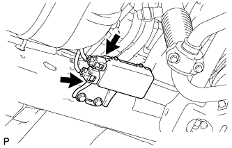 |
Disconnect the 2 fuel pump ECU connectors.
Connect the cable to the negative (-) battery terminal.
Start the engine. After the engine has stopped on its own, turn the engine switch off.
Crank the engine again, and then check that the engine does not start.
Loosen the fuel tank cap, and then discharge the pressure in the fuel tank completely.
Disconnect the cable from the negative (-) battery terminal.
| Condition | Waiting Time |
| Vehicle enrolled in G-BOOK system | 6 minutes |
| Vehicle not enrolled in G-BOOK system | 1 minute |
Connect the 2 fuel pump ECU connectors.
| 2. REMOVE REAR SEAT ASSEMBLY LH |
for 60/40 Split Slide Walk-in Seat Type LH Side:
Remove the rear seat assembly LH (Click here).
| 3. REMOVE REAR FLOOR SERVICE HOLE COVER |
| 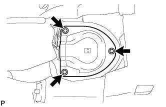 |
Remove the 3 screws and rear floor service hole cover.
| 4. REMOVE NO. 1 FUEL TANK PROTECTOR SUB-ASSEMBLY |
| 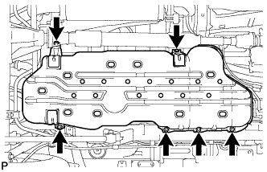 |
Remove the 6 bolts and No. 1 fuel tank protector.
| 5. DISCONNECT FUEL TANK MAIN TUBE SUB-ASSEMBLY |
| 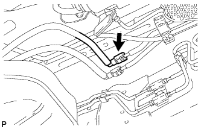 |
Disconnect the fuel tank main tube (Click here).
| 6. DRAIN FUEL |
Connect the intelligent tester to the DLC3.
Turn the engine switch on (IG).
Turn the intelligent tester on.
Enter the following menus: Powertrain / Engine and ECT / Active Test / Control the Fuel Pump / Speed.
Operate the fuel pump and drain the fuel from the fuel tank main tube.
| 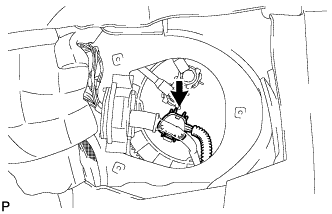 |
Disconnect the fuel pump and sender gauge connector.
| 7. DISCONNECT CABLE FROM NEGATIVE BATTERY TERMINAL |
| Condition | Waiting Time |
| Vehicle enrolled in G-BOOK system | 6 minutes |
| Vehicle not enrolled in G-BOOK system | 1 minute |
| 8. DISCONNECT FUEL RETURN TUBE SUB-ASSEMBLY |
| 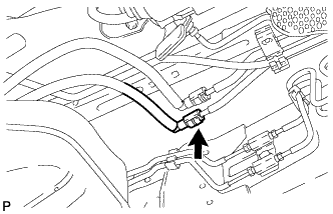 |
Disconnect the fuel return tube (Click here).
| 9. DISCONNECT FUEL CUT OFF TUBE |
| 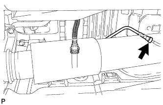 |
Disconnect the fuel cut off tube (Click here).
| 10. DISCONNECT FUEL TANK BREATHER TUBE SUB-ASSEMBLY |
| 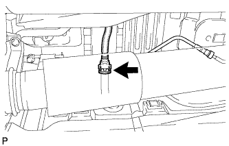 |
Disconnect the fuel tank breather tube (Click here).
| 11. DISCONNECT FUEL TANK TO FILLER PIPE HOSE |
| 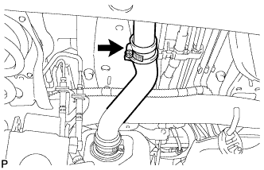 |
Disconnect the fuel tank to filler pipe hose from the filler pipe.
| 12. REMOVE FUEL TANK SUB-ASSEMBLY |
Place a transmission jack under the fuel tank.
| 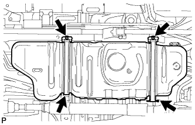 |
Remove the 2 bolts, 2 clips, 2 pins and 2 fuel tank bands.
Slowly lower the transmission jack slightly.
| 13. REMOVE FUEL TANK CUSHION |
| 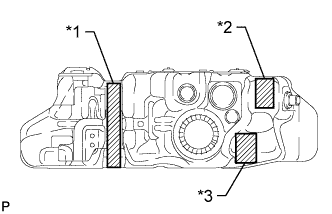 |
Remove the No. 1, No. 2 and No. 3 fuel tank cushions from the fuel tank.
| *1 | No. 1 Fuel Tank Cushion |
| *2 | No. 2 Fuel Tank Cushion |
| *3 | No. 3 Fuel Tank Cushion |
| 14. REMOVE FUEL TANK MAIN TUBE SUB-ASSEMBLY AND FUEL RETURN TUBE SUB-ASSEMBLY |
| 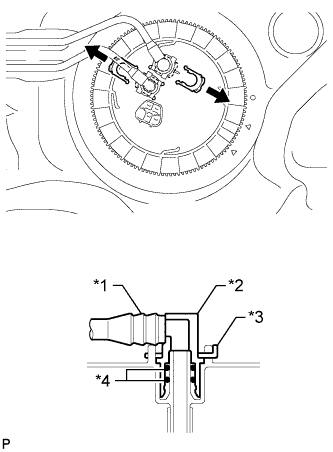 |
Remove the 2 fuel tube joint clips and pull out the fuel tank main tube and fuel return tube.
| *1 | Fuel Tube |
| *2 | Fuel Tube Joint |
| *3 | Fuel Tube Joint Clip |
| *4 | O-ring |
| 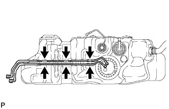 |
Remove the fuel tank main tube and fuel return tube from the fuel tank.
| 15. REMOVE FUEL SUCTION WITH PUMP AND GAUGE TUBE ASSEMBLY |
| 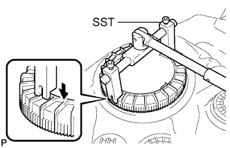 |
Using SST, loosen the retainer.
Remove the retainer.
Remove the fuel suction with pump and gauge tube assembly from the fuel tank.
Remove the gasket from the fuel tank.
| 16. REMOVE NO. 3 FUEL TANK PROTECTOR |
| 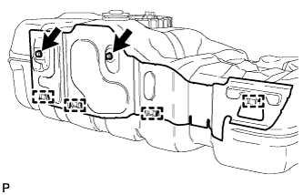 |
Remove the 2 bolts.
Detach the 4 clamps and remove the No. 3 fuel tank protector.
| 17. REMOVE FUEL TANK TO FILLER PIPE HOSE |
| 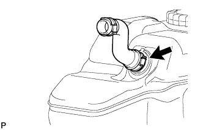 |
Remove the fuel tank to filler pipe hose from the fuel tank.